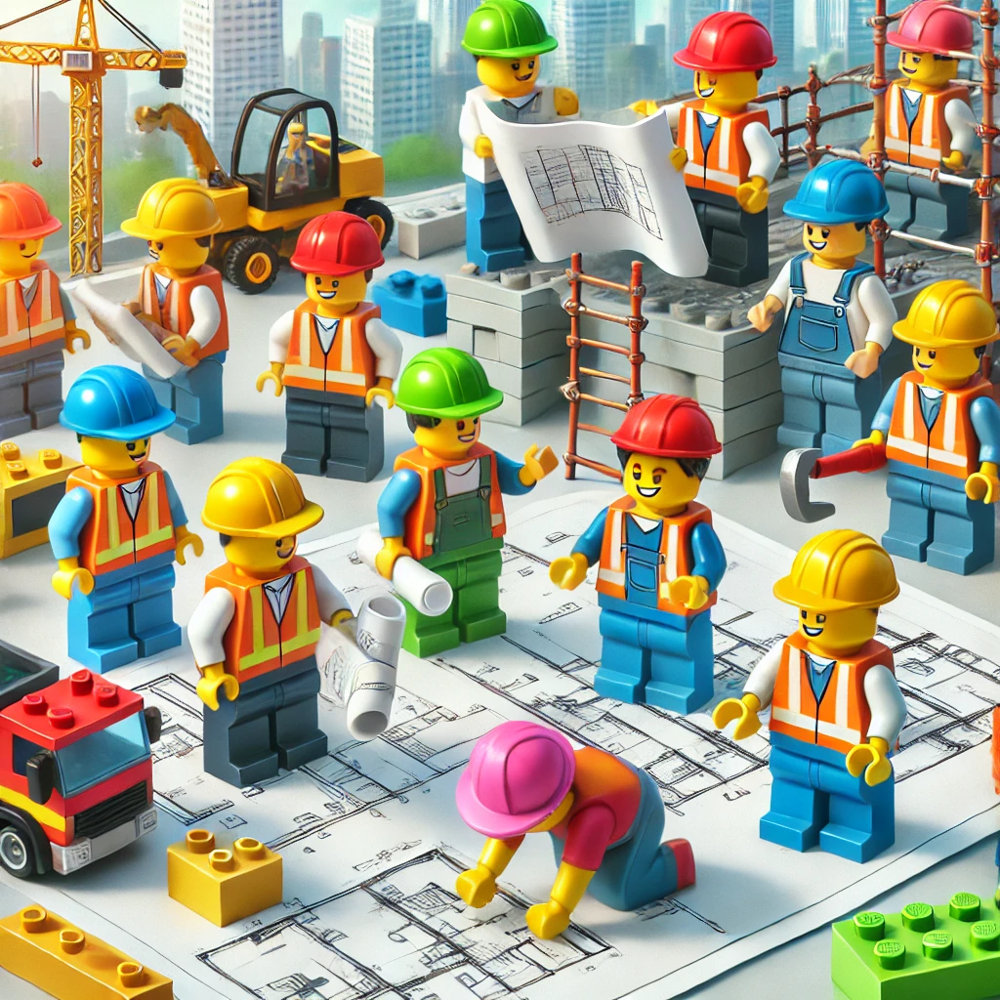

StatikPro Engineering ist ein renommiertes Ingenieurbüro, spezialisiert auf Tragwerksplanung und bautechnische Lösungen. Als junges Unternehmen bieten wir hochqualitative Dienstleistungen in den Bereichen Vorplanung, Entwurfsplanung, Genehmigungsplanung und Ausführungsplanung. Unser Team aus erfahrenen Ingenieuren arbeitet mit modernsten Technologien, um innovative und nachhaltige Bauprojekte zu realisieren.
Wir glauben an die Zukunft des Bauens durch Nachhaltigkeit, Innovation und Effizienz. Unser Ziel ist es, Bauprojekte zu schaffen, die nicht nur funktional und sicher sind, sondern auch einen positiven Einfluss auf die Umwelt haben. Wir arbeiten eng mit Architekten, Bauherren und Partnern zusammen, um individuelle und optimierte Lösungen für jedes Projekt zu entwickeln.
Von der Planung bis zur Ausführung – StatikPro Engineering bietet umfassende Leistungen im Bereich der Tragwerksplanung. Wir unterstützen unsere Kunden in allen Phasen des Bauprozesses und sorgen für effiziente, kostengünstige und sichere Lösungen. Unser Leistungsspektrum umfasst: